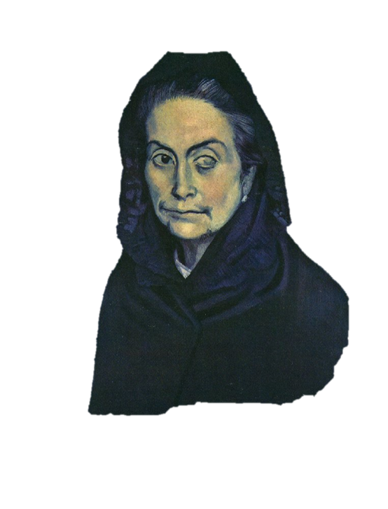
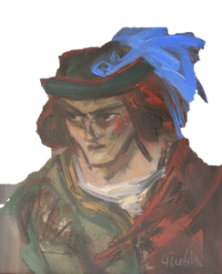
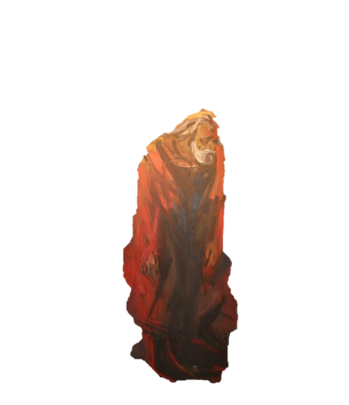
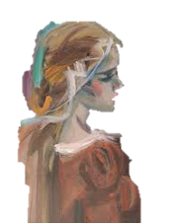
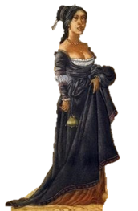
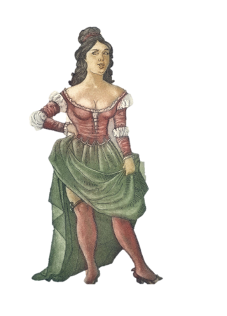
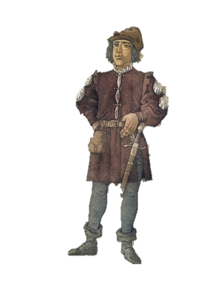
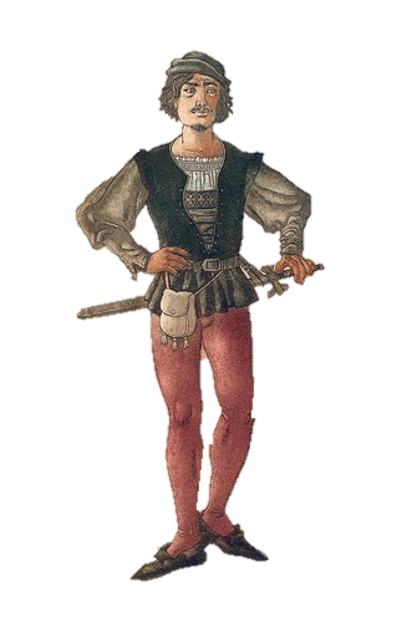
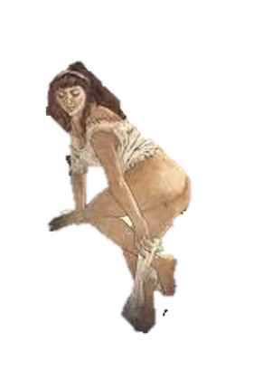
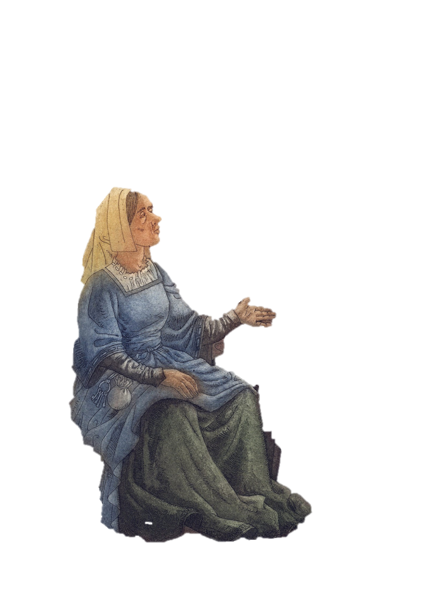

La Celestina es uno de los personajes mas importantes de este cuento. Ella actua como una alcahueta hechicera, que coordina el liason entre Calisto y Melibea. Ella va a la casa de Melibea, y utilizando hechizos y palabras, hace que Melibea
pueda amar a Calisto sin la obstruciones que se pone. La Celestina utiliza el amor, deseo sexual y avaricia de otros para llegar a sus metas, usualmente siendo ganarse mas dinero. Esto termina en ella muriendo a manos de Sempronio cuando
ella no le paga su parte a el y Parmeno
Dile que cierre la boca y abra la bolsa.

Calisto es uno de los personajes principales de la obra. El es un noble incompetente que ha caido por Melibea. Calisto contrata a la Celestina para que le arregle con Melibea. Es una persona bastante tonta, que no puede entender los subtextos
sociales y mensajes implicitos que le manda Melibea. Termina muriendose al caer de una escaleras, lo cual eventualmente causa el suicidio de Melibea.
Cierra la ventana de la alcoba y déjame en la oscuridad. ¡Quiero morir!

pleberio es el padre de Melibea. Es el encargado de llevar a los negocios en la casa, y es un padre muy cariñoso. no trata de parar a Melibea en su busqueda de amor, y es un personaje con un poco de inocencia, ya que confiaba tanto en Melibea.
al final del cuento despues que Melibea se suicida entra en un monologo que cierra el texto. Pleberio actua como la voz del autor, cerrando el texto
in hac lachrymarum valle?

Melibea es la protagonista de este cuento. Es la hija de Pleberio y Alisa, y la amante de Calisto. Es una mujer competente y autonoma, possiblemente porque el autor se vio mas en ella que en calisto. Parece que terminar con Calisto habia sido
su propia desicion, las palabras y los hechizos de la celestina siendo solo una excusa. Se suicida despues de la muerte de Calisto, contandole todo a su padre despues de brincar de una torre.
¿Verme es un gran premio?

Areusa es una de las prostitutas bajo el empleo de la celestina. Fue pareada a Parmeno por la Celestina, convenciendo a Parmeno que se junte a ellos. Con la muerte de Celestina ella y Elicia se deciden vengar, de Calisto y Melibea. esto eventualmente
causa la muerte de los dos cuando Calisto se cae y Melibea se suicida.
Sus riquezas la hacen bella, no las gracias de su cuerpo.

Elicia es una prostituta bajo el empleo de la celestina. Es la amante de Sempronio. trabaja con areusa para vengarse de Calisto y Melibea por la muerte de la Celestina. Eso termina con la muerte de los dos amantes.
"Tres días ha que no me ves. ¡Nunca Dios te vea, nunca Dios te consuele ni visite! ¡Guay de la triste, que en ti tiene su esperanza y el fin de todo su bien".

Parmeno es un criado de Calisto. Comienza como un personaje bastante innocente, tratando de advertir a Calisto de las mentiras de la celestina. Despues de ser ignorado por Calisto y juntado a Areusa, se une a Celestina y Sempronio para confundir
a Calisto. Su madre fue la Maestra de la Celestina. Muere despues de que Sempronio mata a la celestina, siendo degollado en la plaza.
No se cree digna de ella, como Calisto no es digno de Melibea

Sempronio es un criado de Calisto. El se une a la Celestina para confundir a Calisto. El estaba en una relacion con Elicia, cual tambien era empleada de Celestina. Sempronio termina matando a la celestina cuando no le paga su parte de lo que
pago Calisto
Te mandare al infierno con cartas

lucrecia es una criada de Melibea. es envidiosa de Melibea, ya que ella queria tener su vida. es complice de la Celestina. usualmente es ella que deja a la Celestina entrar.
Más conocida es esta que la ruda

Alisa es la madre de Melibea. su mayor acto es cuando viene la Celestina y ella de momento se "recuerda" que tiene una prima enferma que tenia que visitar. Celestina piensa que eso era una oportunidad creada por pluton. Existe un debate entre si de verdad existia esa prima o si era complice del amor entre Calisto y Melibea.